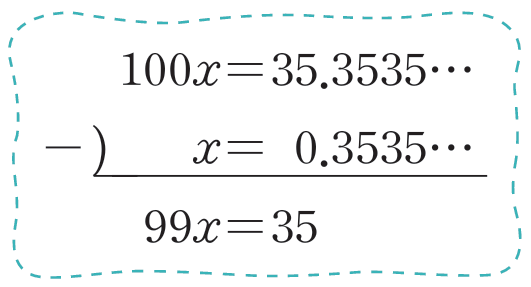

순환소수 \( 0.\dot{3}\dot{5} \)를 분수로 나타내시오.
▷ 빈칸을 눌러 보세요.\( 0.\dot{3}\dot{5}\)를 \( x \)라고 하면 \( x = 0.353535\cdots \) \(······\,①\)
①의 양변에 100을 곱하면
\( 100x = 35.353535\cdots\) \(······\,②\)②에서 ①을 변끼리 빼면
\( 99x = 35,\ x = \dfrac{35}{99} \)
